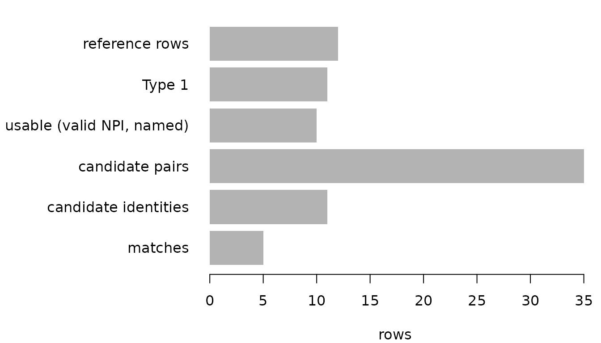
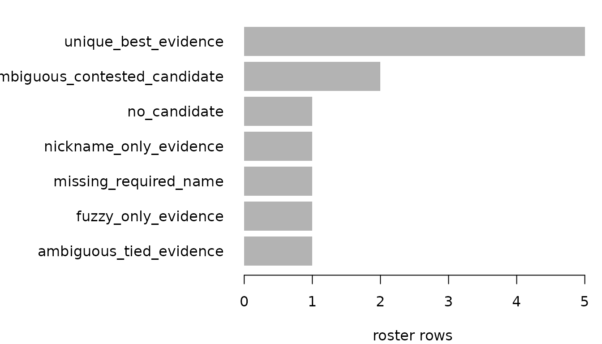

End-to-end NPPES matching: a roster to NPIs with match_npi()
Source:vignettes/end-to-end-nppes-matching.Rmd
end-to-end-nppes-matching.Rmdmatch_npi() takes a roster of people you hold (a
mystery-caller sample, a board list, a study cohort) and the NPPES Type
1 file, and returns every roster row in exactly one of three partitions
– matches, review, unmatched –
together with the candidates it weighed and the reason it gave each one.
The whole vignette runs on synthetic data: no network, no private
provider records, no mounted drive.
Two things make this different from “join on name”:
- Candidates are generated inside bounded blocks, never by comparing every roster row with every national row. Exact surname and given keys, surname-component variants, an exact-surname nickname block, and single-character deletion signatures each retrieve a small set of rows; the union of those sets is everything the evidence layer ever sees.
-
Nothing resolves on a tie, a nickname alone, or a fuzzy
route alone. A roster row gets an NPI only when exactly one
eligible candidate holds its strongest evidence and no other roster row
holds the same NPI at full strength. Everything else goes to
reviewwith a stable reason, and the candidate identities stay incandidatesso a reviewer can finish the job.
Two data paths, one policy
The reference data can be an R data frame (fine for a state extract or a specialty subset) or a DuckDB table (the right choice for the full national file). The backends differ only in where the blocks are built; evidence, tie behaviour, reason codes, and the output schema are shared code.
flowchart LR
R["Roster<br/>(data frame, stable id,<br/>given/middle/surname or full name)"] --> N["Source name keys<br/>name_key(), parse_person()"]
subgraph backends ["Reference backends (same blocks, same output)"]
DF["NPPES data frame<br/>in-memory postings index"]
DB["NPPES table in DuckDB<br/>temporary blocks, read-only source"]
end
N --> DF
N --> DB
DF --> P["Candidate pairs<br/>+ block_route"]
DB --> P
P --> E["Shared evidence<br/>build_npi_candidate_evidence()"]
E --> G["One-to-one gate<br/>resolve_one_to_one()"]
G --> M["matches"]
G --> V["review"]
G --> U["unmatched"]The evidence layer orders candidates by named classes, not by a score. Only the two strongest classes are eligible; the rest can reach review but never resolve.
flowchart TD
C["Candidate pair"] --> X{"Exact leading given name<br/>and exact surname?"}
X -->|yes| EX["exact_name<br/>(eligible)"]
X -->|no| PO{"Initial expansion or compatible<br/>surname components?"}
PO -->|yes| POS["positional_name<br/>(eligible)"]
PO -->|no| W{"Explicit given/surname/middle<br/>conflict?"}
W -->|yes| CF["conflicting_name<br/>(veto: review)"]
W -->|no| WK["weak_name<br/>nickname-only / fuzzy-only<br/>(review)"]
EX --> G{"resolve_one_to_one()"}
POS --> G
G -->|"one strongest candidate,<br/>claimed by nobody else"| M["match:<br/>unique_best_evidence"]
G -->|"tie inside the record"| T["review:<br/>ambiguous_tied_evidence"]
G -->|"same NPI claimed by<br/>two records"| K["review:<br/>ambiguous_contested_candidate"]A synthetic roster and a synthetic NPPES extract
Twelve roster rows, each built to exercise one path. NPIs are synthetic but pass the Luhn check, because invalid NPIs are excluded before matching and we want these rows to survive that gate.
roster <- data.frame(
record = sprintf("r%02d", 1:12),
first = c("Jane", "R.", "Anne", "Bob", "Xlice", "Mary", "Carol", "Carol",
NA, "Zelda", "Jose", "Maria"),
middle = c(NA, NA, NA, NA, NA, NA, "Ann", "Ann", NA, NA, NA, "Elena"),
last = c("Doe", "Brown", "Nelson Becker", "Smith", "Smith", "Jones", "White",
"White", "Lee", "Zzyzx", "Garcia", "Lopez"),
state = c("CO", "CO", "CO", "RI", "RI", "RI", "TX", "TX", "TX", "NM", "NM", "NM"),
stringsAsFactors = FALSE)
nppes <- data.frame(
NPI = c("1234567893", "1046000000", "1053000000", "1245319599", "1004000000",
"1012000000", "1020000000", "1038000000", "1061000000", "1079000000",
"1234567890", "1087000000"),
`Entity Type Code` = c(rep("1", 10), "1", "2"),
`Provider First Name` = c("Jane", "Robert", "Anne", "Robert", "Alice", "Mary",
"Mary", "Carol", "José", "Maria", "Jane", "Jane"),
`Provider Middle Name` = c(NA, NA, NA, NA, NA, NA, NA, "Ann", NA, "E", NA, NA),
`Provider Last Name (Legal Name)` = c("Doe", "Brown", "Nelson-Becker", "Smith",
"Smith", "Jones", "Jones", "White", "García",
"Lopez", "Doe", "Doe"),
check.names = FALSE, stringsAsFactors = FALSE)The last two reference rows are deliberate noise: an NPI that fails the Luhn check, and a Type 2 organisation that happens to be called “Jane Doe”. Neither can ever become a candidate.
Path one: a data frame in memory
result <- match_npi(
roster, nppes,
id = "record", given = "first", middle = "middle", surname = "last",
npi = "NPI", entity_type = "Entity Type Code",
nppes_given = "Provider First Name", nppes_middle = "Provider Middle Name",
nppes_surname = "Provider Last Name (Legal Name)")
str(result$counts)
#> List of 8
#> $ roster_rows : int 12
#> $ matches : int 5
#> $ review : int 5
#> $ unmatched : int 2
#> $ candidates : int 11
#> $ candidate_pairs : int 35
#> $ missing_required_name: int 1
#> $ reference :List of 5
#> ..$ input : int 12
#> ..$ entity_type : int 11
#> ..$ invalid_npi : int 1
#> ..$ missing_required_name: int 0
#> ..$ usable : int 10Every roster row is in exactly one partition, with its source columns intact:
show <- function(x) x[, c("record", "first", "last", "state", "npi", "reason")]
show(result$matches)
#> record first last state npi reason
#> 1 r01 Jane Doe CO 1234567893 unique_best_evidence
#> 2 r02 R. Brown CO 1046000000 unique_best_evidence
#> 3 r03 Anne Nelson Becker CO 1053000000 unique_best_evidence
#> 11 r11 Jose Garcia NM 1061000000 unique_best_evidence
#> 12 r12 Maria Lopez NM 1079000000 unique_best_evidence
show(result$review)
#> record first last state npi reason
#> 4 r04 Bob Smith RI <NA> nickname_only_evidence
#> 5 r05 Xlice Smith RI <NA> fuzzy_only_evidence
#> 6 r06 Mary Jones RI <NA> ambiguous_tied_evidence
#> 7 r07 Carol White TX <NA> ambiguous_contested_candidate
#> 8 r08 Carol White TX <NA> ambiguous_contested_candidate
show(result$unmatched)
#> record first last state npi reason
#> 9 r09 <NA> Lee TX <NA> missing_required_name
#> 10 r10 Zelda Zzyzx NM <NA> no_candidateReading the reasons:
-
unique_best_evidence– one eligible candidate at the record’s strongest class, claimed by no other record. “R. Brown” resolves to Robert Brown because an initial expanding to a full given name on an exact surname is positional evidence, and nothing else in the block competes. “José García” resolves to “Jose Garcia” because keys are compared after accent folding. -
nickname_only_evidence– Bob Smith against Robert Smith. The nickname dictionary corroborates, but nickname evidence alone never auto-resolves; the candidate is kept for a human. -
fuzzy_only_evidence– “Xlice Smith” reached Alice Smith through a one-character deletion signature. A fuzzy route surfaces a suggestion and nothing more. -
ambiguous_tied_evidence– two Mary Joneses with different NPIs hold the same strongest evidence for one roster row. -
ambiguous_contested_candidate– two roster rows (r07 and r08) each uniquely select the same Carol Ann White. Neither gets her: a shared NPI at full strength is a review item, not a coin toss. -
missing_required_name– r09 has no given name, so no candidate was ever generated for it. -
no_candidate– Zelda Zzyzx matched no block.
The candidates component is the audit trail. One row per
source/NPI identity, with the blocking routes that reached it and the
evidence that classified it:
result$candidates[, c("source_id", "npi", "block_routes", "evidence_class",
"middle_evidence", "nickname_evidence", "disposition", "reason")]
#> source_id npi
#> 1 r01 1234567893
#> 2 r02 1046000000
#> 3 r03 1053000000
#> 4 r04 1245319599
#> 5 r05 1004000000
#> 6 r06 1012000000
#> 7 r06 1020000000
#> 8 r07 1038000000
#> 9 r08 1038000000
#> 10 r11 1061000000
#> 11 r12 1079000000
#> block_routes
#> 1 exact_given_surname;surname_initial;surname_variant_given;surname_variant_initial
#> 2 surname_initial;surname_variant_initial
#> 3 fuzzy_surname_given;surname_variant_given;surname_variant_initial
#> 4 nickname_surname
#> 5 fuzzy_given_surname
#> 6 exact_given_surname;surname_initial;surname_variant_given;surname_variant_initial
#> 7 exact_given_surname;surname_initial;surname_variant_given;surname_variant_initial
#> 8 exact_given_surname;surname_initial;surname_variant_given;surname_variant_initial
#> 9 exact_given_surname;surname_initial;surname_variant_given;surname_variant_initial
#> 10 exact_given_surname;surname_initial;surname_variant_given;surname_variant_initial
#> 11 exact_given_surname;surname_initial;surname_variant_given;surname_variant_initial
#> evidence_class middle_evidence nickname_evidence disposition
#> 1 exact_name uninformative corroborates eligible
#> 2 positional_name uninformative corroborates eligible
#> 3 positional_name uninformative corroborates eligible
#> 4 weak_name uninformative corroborates review
#> 5 weak_name uninformative conflicts review
#> 6 exact_name uninformative corroborates eligible
#> 7 exact_name uninformative corroborates eligible
#> 8 exact_name corroborates corroborates eligible
#> 9 exact_name corroborates corroborates eligible
#> 10 exact_name uninformative corroborates eligible
#> 11 exact_name corroborates corroborates eligible
#> reason
#> 1 exact_name_evidence
#> 2 positional_name_evidence
#> 3 positional_name_evidence
#> 4 nickname_only_evidence
#> 5 fuzzy_only_evidence
#> 6 exact_name_evidence
#> 7 exact_name_evidence
#> 8 exact_name_evidence
#> 9 exact_name_evidence
#> 10 exact_name_evidence
#> 11 exact_name_evidencePath two: the same table in DuckDB
For the national file, load NPPES into DuckDB once and pass the connection. The workflow never writes a persistent table: it registers the small roster and its block keys as connection-scoped temporaries, builds the reference blocks in SQL, and brings back candidate pairs only. A read-only connection is the normal operating mode and is what we use here.
path <- tempfile(fileext = ".duckdb")
con <- suppressMessages(DBI::dbConnect(duckdb::duckdb(), path))
DBI::dbWriteTable(con, "npidata", nppes)
DBI::dbDisconnect(con, shutdown = TRUE)
con <- suppressMessages(DBI::dbConnect(duckdb::duckdb(), path, read_only = TRUE))
result_db <- match_npi(
roster, con, table = "npidata",
id = "record", given = "first", middle = "middle", surname = "last",
npi = "NPI", entity_type = "Entity Type Code",
nppes_given = "Provider First Name", nppes_middle = "Provider Middle Name",
nppes_surname = "Provider Last Name (Legal Name)")
DBI::dbDisconnect(con, shutdown = TRUE)
unlink(path)
identical(result_db$matches, result$matches)
#> [1] TRUE
identical(result_db$review, result$review)
#> [1] TRUE
identical(result_db$unmatched, result$unmatched)
#> [1] TRUE
identical(result_db$candidates, result$candidates)
#> [1] TRUEThe two manifests differ only in the backend and table they record:
differs <- names(result$run_manifest)[!mapply(identical, result$run_manifest,
result_db$run_manifest)]
differs
#> [1] "backend" "table"
result_db$run_manifest[c("backend", "table", "package_version", "nickname_policy",
"reference_rows", "reference_rows_filtered",
"reference_excluded_invalid_npi", "reference_rows_usable")]
#> $backend
#> [1] "duckdb"
#>
#> $table
#> [1] "npidata"
#>
#> $package_version
#> [1] "0.7.0"
#>
#> $nickname_policy
#> [1] "nickname-policy-2026-09-07"
#>
#> $reference_rows
#> [1] 12
#>
#> $reference_rows_filtered
#> [1] 11
#>
#> $reference_excluded_invalid_npi
#> [1] 1
#>
#> $reference_rows_usable
#> [1] 10Where the rows went
The candidate funnel: from the reference table through the entity filter and the validity gates to the pairs the blocks retrieved, the identities the evidence layer scored, and the records that resolved.
counts <- result$counts
funnel <- c(`reference rows` = counts$reference$input,
`Type 1` = counts$reference$entity_type,
`usable (valid NPI, named)` = counts$reference$usable,
`candidate pairs` = counts$candidate_pairs,
`candidate identities` = counts$candidates,
`matches` = counts$matches)
op <- par(mar = c(4, 12, 1, 1))
barplot(rev(funnel), horiz = TRUE, las = 1, col = "grey70", border = NA,
xlab = "rows")
par(op)Dispositions by reason, which is the view a review queue is planned from:
reasons <- table(c(result$matches$reason, result$review$reason, result$unmatched$reason))
op <- par(mar = c(4, 14, 1, 1))
barplot(sort(reasons), horiz = TRUE, las = 1, col = "grey70", border = NA,
xlab = "roster rows")
par(op)Linkage outcomes on a map
With mysterymaps installed, the roster’s own state field
gives a state-level view of linkage outcomes. The maps describe this
roster’s match rate per state and nothing else: they say nothing
about provider availability or quality, and no NPPES address is geocoded
(the roster carries a state, not a street address).
outcome <- rbind(result$matches, result$review, result$unmatched)
outcome$matched <- as.integer(outcome$reason == "unique_best_evidence")
outcome$needs_review <- as.integer(outcome$record %in% result$review$record)
aggregate(cbind(matched, needs_review) ~ state, data = outcome, FUN = mean)
#> state matched needs_review
#> 1 CO 1.0000000 0.0000000
#> 2 NM 0.6666667 0.0000000
#> 3 RI 0.0000000 1.0000000
#> 4 TX 0.0000000 0.6666667
print(state_map(outcome, state_col = "state", outcome_col = "matched",
fill_label = "Matched", title = "Share of roster rows with a unique NPI",
subtitle = "Synthetic roster; four states; not a measure of provider supply",
low_states_warn = 0L))
print(state_map(outcome, state_col = "state", outcome_col = "needs_review",
fill_label = "Needs review", title = "Share of roster rows routed to review",
subtitle = "Synthetic roster; the review queue a team would work",
palette = "magma", low_states_warn = 0L))mysterymaps is not installed in this build, so the
two state maps (match rate and review rate by state) are skipped.
Install it with
remotes::install_github("mufflyt/mysterymaps") and
rebuild.
Using it on real data
Both forms below are shown, not run. The national NPPES file is several gigabytes; the DuckDB path keeps it on disk.
A full extract already loaded into R, using the standard NPPES headers:
nppes_full <- readr::read_csv("npidata_pfile.csv", col_types = readr::cols(.default = "c"))
result <- match_npi(
my_roster, nppes_full,
id = "roster_id", given = "first_name", surname = "last_name",
npi = "NPI", entity_type = "Entity Type Code",
nppes_given = "Provider First Name", nppes_middle = "Provider Middle Name",
nppes_surname = "Provider Last Name (Legal Name)")An existing DuckDB database, opened read-only, with the table named
explicitly (a DBI::Id() works for a schema-qualified
table):
con <- DBI::dbConnect(duckdb::duckdb(), "nppes.duckdb", read_only = TRUE)
result <- match_npi(
my_roster, con, table = DBI::Id(schema = "main", table = "npidata"),
id = "roster_id", given = "first_name", surname = "last_name",
npi = "NPI", entity_type = "Entity Type Code",
nppes_given = "Provider First Name", nppes_middle = "Provider Middle Name",
nppes_surname = "Provider Last Name (Legal Name)")
DBI::dbDisconnect(con, shutdown = TRUE)Choosing between them:
- Data frame. The in-memory backend projects the reference to the mapped columns before indexing, but those columns for ~8 million Type 1 rows still need to fit in RAM alongside the index. Use it for state or specialty extracts.
-
DuckDB. Filtering, normalisation, validity checks,
and block joins run in the database; only candidate pairs cross into R.
Use it for the full file, and open the connection
read_only = TRUE– the workflow needs nothing more.
What this does not do
-
It does not score. There is no similarity threshold
to tune. A record resolves on a rule (unique strongest eligible
candidate, uncontested) or it does not. If you need more matches, the
lever is better source names or a review workflow over
candidates, not a lower cutoff. - Fuzzy and nickname routes are suggestions. They exist so a reviewer sees the plausible row; they never resolve on their own.
-
The DuckDB backend needs structured reference names
(given and surname columns, middle optional). NPPES ships them; a
reference table holding only full names must be parsed before loading,
or run through the in-memory backend, which can parse full names with
parse_person(). - One roster row, at most one NPI. A person with two NPIs (it happens) will surface as a tie or a contest and land in review, by design.
- Maps are about the roster. A state’s “match rate” here is a property of the names you supplied and the reference you matched against, not of the providers in that state.